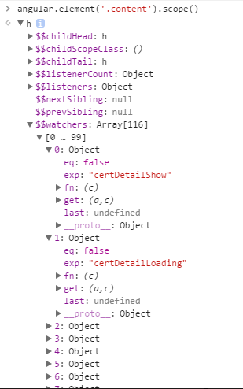

脏检测的简单实现
angular的脏检测应该是众所周知了，看一下下面这个图，社区某个页面scope绑定的值。我们通过以下代码就可以访问到作用域中绑定的值。
|
|

假设你在一个ng-click指令对应的handler函数中更改了scope中的一条数据，此时AngularJS会自动地通过调用$digest()来触发一轮$digest循环。
ng只有在指定事件触发后，才进入$digest cycle：
- DOM事件，譬如用户输入文本，点击按钮等。(ng-click)
- XHR响应事件 ($http)
- 浏览器Location变更事件 ($location)
- Timer事件($timeout, $interval)
- 执行$digest()或$apply()
在$digest流程中，Angular将遍历每个数据变量的watcher，比较它的新旧值。当新旧值不同时，触发listener函数，执行相关的操作。
需要注意的是，$digest循环不会只运行一次。在当前的一次循环结束后，它会再执行一次循环用来检查是否有models发生了变化。它用来处理在listener函数被执行时可能引起的model变化。因此，$digest循环会持续运行直到model不再发生变化，或者$digest循环的次数达到了10次（好像是叫做TTL）因此，尽可能地不要在listener函数中修改model。
下面是简单双向绑定的实现：
（为了方便理解，我把改变视图的函数写在$digest中，实际上应该分开写）
|
|
以上是对$watch和$digset的简单实现，并没有考虑数组和对象
下面这一部分做了三件事
- 将scope绑定的值添加到$$watcher中
- 监听ng-click和input事件，触发$digest()
- 默认执行一次$digest123456789101112131415161718192021222324252627282930313233343536373839window.addEventListener('onload',function(){let $scope=new scope();$scope.count=0;$scope.wmx=123;$scope.increment=function(){this.count++};//监听ng-click事件，触发$digest循环（使用es6的let）let bindList=document.querySelectorAll('[ng-click]');for(let i=0;i<bindList.length;i++){bindList[i].onclick=function(){$scope[bindList[i].getAttribute("ng-click")]();$scope.$digest();}}//监听input事件，触发$digest循环（使用闭包）let inputList=document.querySelectorAll("input[ng-bind]");for(var i=0;i<inputList.length;i++){inputList[i].addEventListener("input",(function(index){return function(){$scope[inputList[index].getAttribute("ng-bind")]=inputList[index].value;$scope.$digest();}})(i));}//以下这段是将scope绑定的值添加到$$watchers//newVal必需设置为函数。如果是数据变量，那么它的新值将一直等于创建监听器时绑定的//值，而实际上数据的值是在不断变化的。使用函数便能在每次调用时返回它的最新值。for(let key in $scope){if(key!="$$watcher" && typeof $scope[key]!="function") {$scope.$watch(key, function () {return $scope[key];})}}//默认触发一次digest（）$scope.$digest();})
看一下效果：链接
有一点很有趣，angular是进入$digest cycle，等待所有model都稳定后，才批量一次性更新UI。
这种机制能减少浏览器repaint次数，从而提高性能。